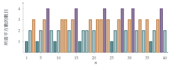

STEP III 1994，第 8 題
繼續之前，請先閱讀題目（原題為英文）。題目載於 STEP Support Programme 的題目資料庫： step.maths.org/questions/94-s3-q8
引子
\(7\) 不是兩個平方數之和，也不是三個平方數之和，卻是四個平方數之和：\(7 = 4 + 1 + 1 + 1\)。1770 年，拉格朗日（Joseph-Louis Lagrange）證明了每一個正整數都是四個平方數之和（容許使用 \(0^2\)）。這條定理早在 1621 年已由 Bachet 提出猜想，費馬（Fermat）亦聲稱自己證得，但一如以往沒有留下證明；歐拉（Euler）為此鑽研了四十年，始終差一步未能完成。
關鍵的工具由歐拉於 1748 年發現，正正就在這道題目之中：兩個四平方和的積，本身也是一個四平方和。這表示只需對質數（prime number）證明拉格朗日定理，其餘情況靠相乘便可得出。題目利用複矩陣（complex matrix）的行列式（determinant），寥寥數行便推導出這條恆等式（identity），而這些矩陣其實就是 第 6.7 節 中的四元數（quaternion），只是換了個面貌。
動筆之前
回想兩平方的版本：\((a^2 + b^2)(p^2 + q^2)\) 是兩個平方數之和，因為對複數 \(z = a + b\mathrm{i}\)、\(w = p + q\mathrm{i}\) 有 \(|z|^2|w|^2 = |zw|^2\)。矩陣可以怎樣把這個結果推廣到四個平方？
想法是找出一種由四個實數構成的「數」，它的「大小的平方」是 \(a^2 + b^2 + c^2 + d^2\)，而且具有可乘性（multiplicative）。矩陣的行列式正有可乘性：\(\det(\mathbf{AB}) = \det\mathbf{A}\det\mathbf{B}\)。因此我們要找一個由 \(a, b, c, d\) 構成的矩陣，其行列式為 \(a^2 + b^2 + c^2 + d^2\)，並且這類矩陣相乘後仍然是同一形式。
逐步解題
階段 1 行列式是四個平方數之和
\(\begin{pmatrix} z_1 & z_2 \\ -z_2^* & z_1^* \end{pmatrix}\) 的行列式是甚麼？若 \(z_1 = a + b\mathrm{i}\) 及 \(z_2 = c + d\mathrm{i}\)，以 \(a, b, c, d\) 表示又是甚麼？
\(\det = z_1z_1^* + z_2z_2^* = |z_1|^2 + |z_2|^2 = a^2 + b^2 + c^2 + d^2\)。同樣地，取 \(z_3 = p + q\mathrm{i}\) 及 \(z_4 = r + s\mathrm{i}\)，第二個矩陣的行列式為 \(p^2 + q^2 + r^2 + s^2\)。
階段 2 乘積具有相同形式
相乘得 \[\begin{pmatrix} z_1 & z_2 \\ -z_2^* & z_1^* \end{pmatrix}\begin{pmatrix} z_3 & z_4 \\ -z_4^* & z_3^* \end{pmatrix} = \begin{pmatrix} z_1z_3 - z_2z_4^* & z_1z_4 + z_2z_3^* \\ -z_2^*z_3 - z_1^*z_4^* & -z_2^*z_4 + z_1^*z_3^* \end{pmatrix}.\] 設 \(w_1 = z_1z_3 - z_2z_4^*\) 及 \(w_2 = z_1z_4 + z_2z_3^*\)，則下面一行是 \((-w_2^*, w_1^*)\)，所以乘積是 \(\begin{pmatrix} w_1 & w_2 \\ -w_2^* & w_1^* \end{pmatrix}\)，形式相同。它的行列式是 \(|w_1|^2 + |w_2|^2\)，而由於行列式可以相乘， \[(a^2 + b^2 + c^2 + d^2)(p^2 + q^2 + r^2 + s^2) = |w_1|^2 + |w_2|^2.\]
階段 3 讀出四個平方
把 \(w_1 = (a + b\mathrm{i})(p + q\mathrm{i}) - (c + d\mathrm{i})(r - s\mathrm{i})\) 及 \(w_2 = (a + b\mathrm{i})(r + s\mathrm{i}) + (c + d\mathrm{i})(p - q\mathrm{i})\) 展開，寫成實部（real part）和虛部（imaginary part）。
\[w_1 = (ap - bq - cr - ds) + \mathrm{i}(aq + bp + cs - dr),\] \[w_2 = (ar - bs + cp + dq) + \mathrm{i}(as + br - cq + dp).\] 所以 \[\begin{aligned} L_1 &= ap - bq - cr - ds, & L_2 &= aq + bp + cs - dr, \\ L_3 &= ar - bs + cp + dq, & L_4 &= as + br - cq + dp, \end{aligned}\] 每一個對 \(a, b, c, d\) 及對 \(p, q, r, s\) 都是線性（linear）的，並且 \((a^2 + b^2 + c^2 + d^2)(p^2 + q^2 + r^2 + s^2) = L_1^2 + L_2^2 + L_3^2 + L_4^2\)。■
例如，\(7 = 2^2 + 1^2 + 1^2 + 1^2\) 而 \(3 = 1^2 + 1^2 + 1^2 + 0^2\)。取 \((a, b, c, d) = (2, 1, 1, 1)\) 及 \((p, q, r, s) = (1, 1, 1, 0)\)，由公式得 \((L_1, L_2, L_3, L_4) = (0, 2, 4, 1)\)，而果然 \(0^2 + 2^2 + 4^2 + 1^2 = 21 = 7 \times 3\)。
回顧
可乘性是關鍵。這條恆等式來自 \(\det(\mathbf{AB}) = \det\mathbf{A}\det\mathbf{B}\)，正如兩平方恆等式來自 \(|zw| = |z||w|\) 一樣。
對乘法封閉（closure）。\(\begin{pmatrix} z_1 & z_2 \\ -z_2^* & z_1^* \end{pmatrix}\) 這個特殊形式在相乘之下保持不變，結果才會是另一個四平方和。
細心記賬十分重要。最後一步雖屬例行運算，卻容易出錯；正負號和共軛（conjugate）都必須小心處理。
背後的數學
拉格朗日的證明大致如下。根據歐拉恆等式，只需證明每個質數 \(p\) 都是四個平方數之和。先用一個計數論證，證明存在某個倍數 \(mp\)（其中 \(m < p\)）是四個平方數之和。然後用一個巧妙的「遞降法」（descent）證明：若 \(mp\) 是四個平方數之和而 \(1 < m < p\)，則對某個更小的 \(m'\)，\(m'p\) 也是四個平方數之和；如此重複下去，便會到達 \(m = 1\)。（可與 第 1.5 節 中費馬的遞降法比較。）1834 年，雅可比（Jacobi）更進一步，求出把 \(n\) 寫成四個平方數之和的方法的確切數目：\(n\) 的所有非 \(4\) 的倍數的因數之和的 \(8\) 倍。例如，\(1\) 有 \(8\) 種寫法（\(\pm1\) 可放在四個位置中的任何一個）。

二、三、四
不同維數之間的規律相當微妙。兩平方和來自複數，而一個數是兩個平方數之和，當且僅當它的質因數中形如 \(4k + 3\) 的都以偶數次冪出現（第 1.6 節）。四平方和來自四元數，而每個數都是四平方和。但三平方和卻完全沒有乘法恆等式（並不存在一個「大小」具可乘性的三維數系；這正是哈密頓（Hamilton）研究三元組時失敗的原因，見 第 6.7 節），相應的定理也較難：勒讓德和高斯證明了，除非 \(n = 4^k(8m + 7)\)，否則 \(n\) 是三個平方數之和（圖 7.8.1）。四以上，八維的八元數（octonion）給出一條八平方恆等式，由 Degen 和 Graves 發現；而胡爾維茲（Hurwitz）於 1898 年證明，這類恆等式只在 \(1\)、\(2\)、\(4\) 和 \(8\) 個平方的情況下存在。
華林問題
拉格朗日定理是華林（Edward Waring）於 1770 年提出的一個問題的第一個情況：對每個 \(k\)，是否存在一個數 \(g(k)\)，使得每個正整數都是最多 \(g(k)\) 個 \(k\) 次冪之和？希爾伯特（David Hilbert）於 1909 年證明了確實存在。現在我們知道 \(g(2) = 4\)、\(g(3) = 9\)（例如 \(23 = 2 \cdot 2^3 + 7 \cdot 1^3\) 需要九個立方數）以及 \(g(4) = 19\)。
思維技巧
要證明某個性質在乘法之下得以保持，可尋找一個代數結構（複數、四元數、矩陣），使該性質就是其中某個對象的「大小」，而大小具有可乘性。
一旦找到這樣的結構，乘積恆等式便唾手可得，而一個關於所有數的問題，也就化為一個關於質數的問題。
延伸練習
一個實例。利用 \(L_1, \ldots, L_4\) 的公式，取 \((a, b, c, d) = (p, q, r, s) = (2, 1, 1, 1)\)，把 \(49 = 7 \times 7\) 寫成四個平方數之和，並驗算你的答案。它與顯而易見的 \(49 = 7^2 + 0^2 + 0^2 + 0^2\) 是否相同？
四平方中的兩平方。證明若 \(c = d = r = s = 0\)，這條恆等式便簡化為 第 1.6 節 的兩平方恆等式。
需要四個平方的數。考慮平方數模 \(8\) 的餘數，證明形如 \(8m + 7\) 的數都不是三個平方數之和。
雅可比公式。數一數把 \(2\) 表示成四個平方數之和的方法有多少種（次序和正負號不同均視為不同），並驗證答案是 \(8 \times (1 + 2) = 24\)。
延伸閱讀
Harold Davenport, The Higher Arithmetic（Cambridge University Press）。第 V 章證明了拉格朗日四平方和定理。
John Conway & Derek Smith, On Quaternions and Octonions（A. K. Peters）。講述四元數的算術，包括利用四元數整數證明四平方和定理。
Aigner & Ziegler, Proofs from THE BOOK，「Representing numbers as sums of two squares」（把數表示成兩個平方數之和）一章。與本節相配的兩平方版本。